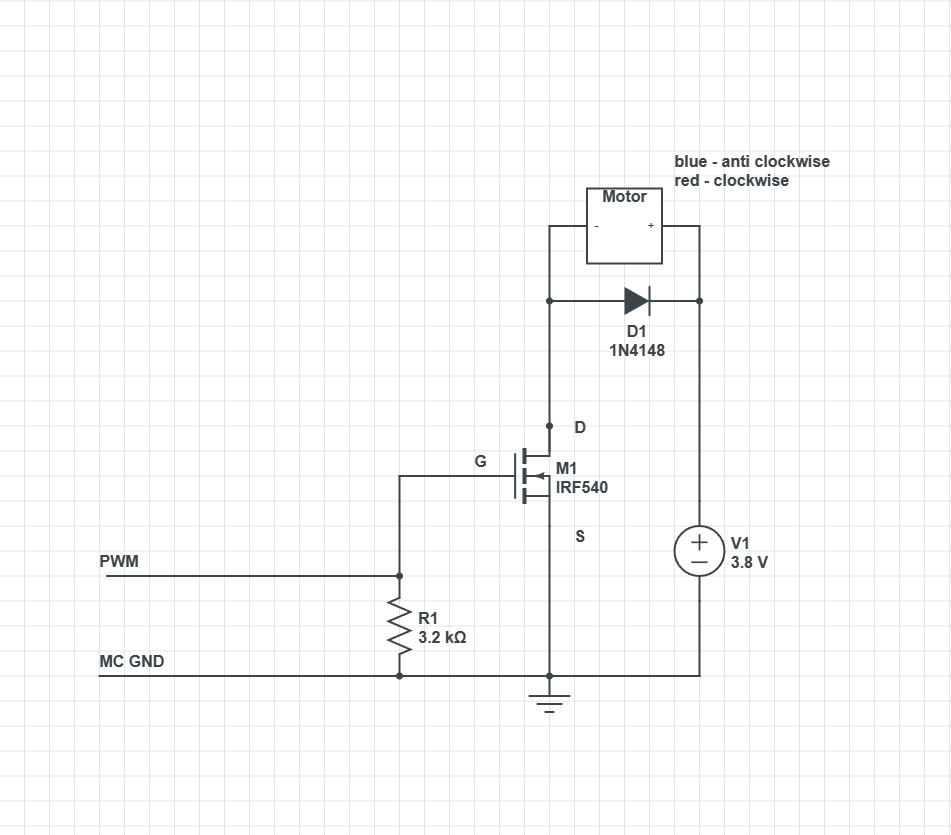
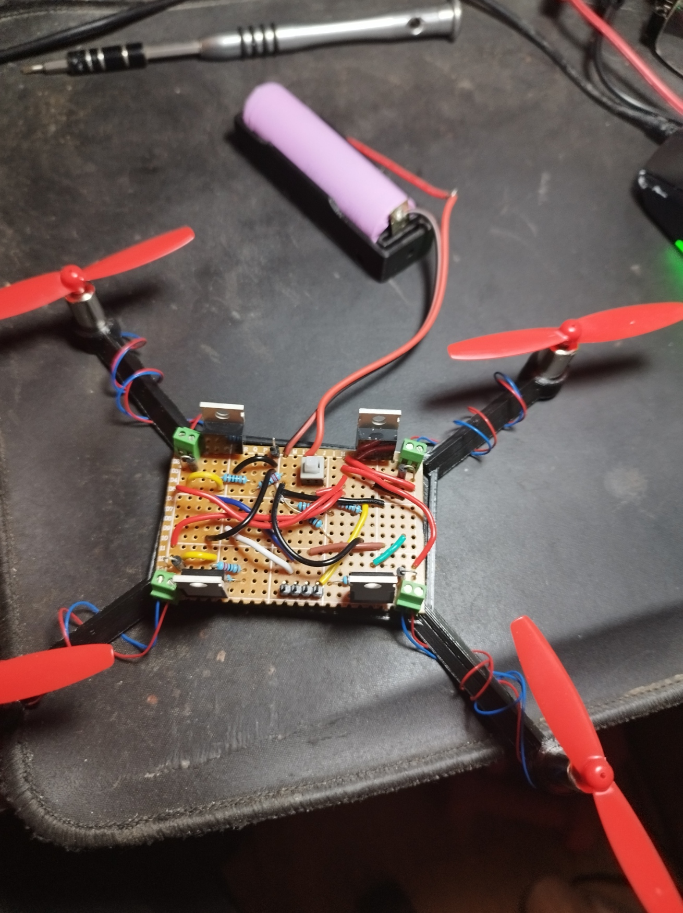

Super Budget Mini Drone Project
An attempt to make a cheap drone controlled by a microcontroller and PWM mosfet circuit rather than using an expensive flight controller board and ESCs. The microcontroller will likely be an ESP32 rather than an Arduino or Pi because of its faster processor.
Parts -
4 each of:
1N4007 diode (not the diode listed in the diagram below)
IRF540N mosfet
3.2k ohm resistor. I used 1k + 2.2k because that’s what I had to hand.
Mini coreless 8520 motor and props
I connected a toggle switch between the battery and the 4 motor circuits to turn the power off and on
This is the circuit diagram for each motor. It is centered around the mosfet which controls the amount of voltage sent to the motor depending on the PWM input.
I noted the red and blue wire orientation to remind myself which colour to attach to the positive terminal to make it turn the correct way because, as we know, drones need two pairs of rotors spinning in opposite directions.

I 3d printed a basic frame and connected an 18650 battery. I crammed 4 of the above circuits onto this board, very spaghetti like. The 4 empty headers at the front are the
PWM inputs for each motor, the empty header at the back is for the ground connection from the microcontroller.

To do:
- Program and attach a microcontroller to output PWM signals and test each rotor.
- Somehow attach the battery and microcontroller to the body see it it can lift that much weight.
I might have to design a new drone body that incorporates a battery holder and some sort of shelf for the microcontroller.
- Check how hot the mosfets and battery gets after running for a bit. Each motor seems to draw up to 1.2 amps and although the mosfets can handle this much I might need to attach some heat sinks.
I should be using two batteries but I seriously doubt it'll be able lift both.
- Attach a
little 4 channel rc reciever to the microcontroller for input.
- Attach a
MPU6050 Accelerometer/Gyroscope
and look for some third party flight controller software to keep it stable.